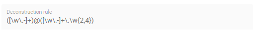

Edit elements
The elements of an Aspect Model – such as Properties, Operations, Characteristics, Constraints, Entities, or Events – have attributes, which can be edited in the Edit dialog.
Elements that belong to other namespaces/files cannot be edited.
For an overview of Aspect Model elements, see Meta Model Elements (SAMM 2.0.0).
Edit elements with the Edit dialog
To edit the attributes for an element, proceed as follows:
-
Double-click an element to open it in the Edit dialog.
Alternatively, select the element and click the Edit icon
 in the toolbar.
in the toolbar. -
In the Edit dialog, change the attributes of the element.
Mandatory attribute fields are marked with an asterisk (*).
Jump from one attribute field to the next by pressing the Tab key on your keyboard. -
Click the Save button.
Save and close the Edit dialog by pressing Control + Enter on your keyboard.
→ As a result, the attributes for the element of your Aspect Model have been changed and saved.
Unique element names
Element names can be changed but should be unique throughout the Aspect Model.
The name of the Aspect also serves as the name of the Aspect Model. However, if the aspect name is removed, it is possible to assign a customized name for the aspect model, see Shared models.
The attributes preferredName and description are non-unique to allow for supporting multiple languages.
That means, these attributes can be defined multiple times for different languages but only once for a specific language.
For adding or removing languages, see language settings.
|
The Aspect Model Editor takes care of valid names. For more information, see Naming rules (SAMM 2.0.0).
The samm:see attribute
Use the samm:see attribute to add references to related elements in an external taxonomy, ontology, or standards document to Aspect Models.
-
The value of the
samm:seeattribute must be a URI. -
To set multiple values for the
samm:seeattribute, separate them by commas.
The meaning of the reference is informative only and implies no semantics such as equality or subsumption in either direction. For more information, see Adding external references (SAMM 2.0.0).
Properties Configuration for Aspects and Events
The Aspect as well as Entity elements can contain additional Properties. Entities are wrappers for encapsulating multiple Properties, so apart from its standard attributes the most important thing is to add the relevant Properties.
To add and configure Properties, open the Properties Configuration by clicking the Configure button.
Name |
Name of the Property |
Optional |
This means that the content may or may not be provided in the API response of the corresponding implementation of the Aspect |
Not in Payload |
This means that the content will not be provided in the API response. (Usage of the Property in the Aspect Model is for explanations only.) |
Payload Name |
Overrides the Property’s name in the runtime payload. |
Property attributes
Properties can contain an example value:
Example value |
This provides an example value for the Property, which requires that the entered data type has been defined in a corresponding Characteristic. It is important to ensure that the data type has the correct format. Find the Data Types (SAMM 2.0.0) with an example value. |
Operation attributes
Operations can have multiple inputs and one output:
Inputs |
A list of references to Properties that describe the input to the Operation. The attribute must be present but the list may be empty. |
Outputs |
A single reference to a Property that describes the output of the Operation. |
Multiple Properties can be entered for the Input attribute.
To add Properties to the Input or Output attribute, proceed as follows:
-
In the Edit dialog, select the Input or Output attribute field.
-
Start typing a new or existing Property name.
-
In the displayed drop-down menu, click the new or existing Property name to add it as a value for the Input/Output attribute.
→ Now a Property has been added to the Input/Output attribute of the Operation.
|
|


| Currently, no Properties can be optionally set in Operations. See Optional Properties (SAMM 2.0.0). |
Characteristic attributes
Depending on the Characteristic class (i.e., Characteristics' classes and instances), different attributes are available. For the correct understanding of Characteristics, see Characteristics and Constraints (SAMM 2.0.0). In the following, handling Characteristics with the Aspect Model Editor will be explained.
Choose a Characteristic class
For a new Characteristic, first choose a Characteristic class value from the drop-down menu of the Characteristic class attribute in the Edit dialog.
→ This will auto-populate the Edit dialog with the corresponding attribute fields.
Data type attribute
SAMM allows two kinds of data types: simple types (scalars) and complex types (Entities).
-
For using a simple data type, populate the data type field with a value like
xsd:float,xsd:integerorxsd:string(no quotation marks, no spaces), see Data Types (SAMM 2.0.0).Make sure that you do not include a space character as they are not accepted. -
For using a complex data type, relate this Characteristic with an Entity, which will then be the data type of the Characteristic.
Enumeration Characteristics
An Enumeration Characteristic can have simple data types or complex data types.
Simple data types for Enumeration Characteristics
If your Characteristic is an Enumeration, provide the possible values as a space-separated list of strings, e.g., red yellow green.
See also Declaring Enumerations(SAMM 2.0.0).
If no data type is selected, string is selected as default for the values.
Complex data types for Enumeration Characteristics
If the Characteristic is an Enumeration and the data type is an Entity, the possible values for this enumeration are the instances of the provided Entity.
Add Entity instances to complex data types
To add an Entity instance as a complex value data type for an Enumeration Characteristic, proceed as follows:
-
Click the Add button at the data type attribute field.
-
In the displayed dialog, enter the Entity instance name and the values of its properties.

-
Click Save.
→ Now the Enumeration Characteristics Edit dialog displays a table with the information you just entered.

Now you can also create Entity instances using the Add icon  at the Enumeration Characteristic element in the Aspect Model.
Note that first an Entity had to be created before an instance can be added.
at the Enumeration Characteristic element in the Aspect Model.
Note that first an Entity had to be created before an instance can be added.
Add nested Entity instances
The properties of the Entity instance described above had simple values. However, they can also have complex values. To achieve that, use nested Entity instances.
| Nested instances can only be created once the model allows it. It is important to construct your model first and then create the instances. |
To create a nested Entity instance, proceed as follows:
-
Double-click on an existing Entity instance element to show its attributes in the Edit dialog.
-
Start typing a new Entity instance name and then select it from the drop-down menu.
Note that complex values have an icon that identifies them, i.e., a new Entity instance should be created here. Once created, the attribute field is read-only and you can only remove a nested Entity instance with the Delete icon if another Entity instance is to be created or used for it.
-
Click Save.
→ Now the new nested Entity instance is related as a property value to the overarching Entity instance.

Structured Value Characteristics
Structured Value Characteristics allow to semantically describe formatted string-like values like a date, email, or product’s type part number. For example, for such type part numbers, the parts should be semantically described separately and the composition of those into one string should be described via a regular expression. For more background on Structured Values, see Structured Value(SAMM 2.0.0)
For Structured Value Characteristics, the following attributes have to be defined:
Deconstruction rule name |
A single choice for choosing a predefined rule or defining a custom rule. |
Deconstruction rule |
* If the * If anything else is selected, this attribute will be populated with a predefined rule and it is disabled. * For a piece of your regex to correspond with a property in  |
Elements |
Opens up a dialog containing a table with two columns. One column shows all the capture groups from the |


To edit a new Structured Value Characteristic, proceed as follows:
-
In the Edit dialog, choose the Characteristic class StructuredValue.
-
Enter values for the attributes Deconstruction rule name, Deconstruction rule, and Elements.
-
Click Save.
→ Now you can see the changes in editor.

To create a new element from such a Structured Value Characteristic, proceed as follows:
-
Click the Add icon
on the Structured Value Characteristic shape.
→ As a result, a new Property is created.
A new Property created from a Structured Value Characteristic, is automatically inserted as an attribute in the Structured Value Characteristic and the (regex) capture group is automatically appended to deconstructionRule.
|
Unit as an attribute for Characteristics
As an attribute for Characteristics, a Unit can be optional or mandatory.
If your Characteristic is a Quantifiable (see Characteristics (SAMM 2.0.0)), Unit is an optional attribute (only exception for not having a Unit: unit-less countable Quantifiable).
For the Characteristic classes Duration and Measurement the Unit attribute is mandatory.
Entering a value to the Unit attribute field is done through a search:
-
Start typing the Unit you are searching for.
-
You may also use advanced search syntax (=metre, *metre, perSecond$) as explained in Search Elements.
-
Select your Unit from the drop-down menu of the Unit attribute.
For a complete list of supported Units refer to the Unit Catalog (SAMM 2.0.0).
Further explanations about using Units can be found in Characteristics (SAMM 2.0.0).
| Do not include space characters as they are not accepted. |
Constraint attributes
Constraints are special Characteristics that can restrict some features of the Characteristics. A list of the available Constraints can be found in the SAMM Aspect Meta Model version 1.0.0..
Except for Length Constraint, Range Constraint, and Fixed Point Constraint, all other Constraint types use string as a defined Constraint value.
For example, the Range Constraint uses minimum and maximum value.
| Before you can add a Constraint to your Aspect Model, you have to add a Trait. |
For more information on adding Traits, see Use Traits.
Custom Units
The Semantic Aspect Meta Model includes a comprehensive catalog of physical units and quantity kinds, providing a rich foundation for representing various quantities. For instance, the catalog encompasses predefined units like "metre," "inch," "millimetre," and more, under the quantity kind of "length." This catalog aligns with the UNECE Recommendation 20 [rec20] and offers approximately 1,800 predefined units.
To cater to specific requirements, the Aspect Model Editor empowers users to create their own custom units. With this, users can define and utilize unique units within the system, expanding the capabilities of representation and analysis.
For more information on adding custom Units, see Units^ (SAMM 2.0.0)